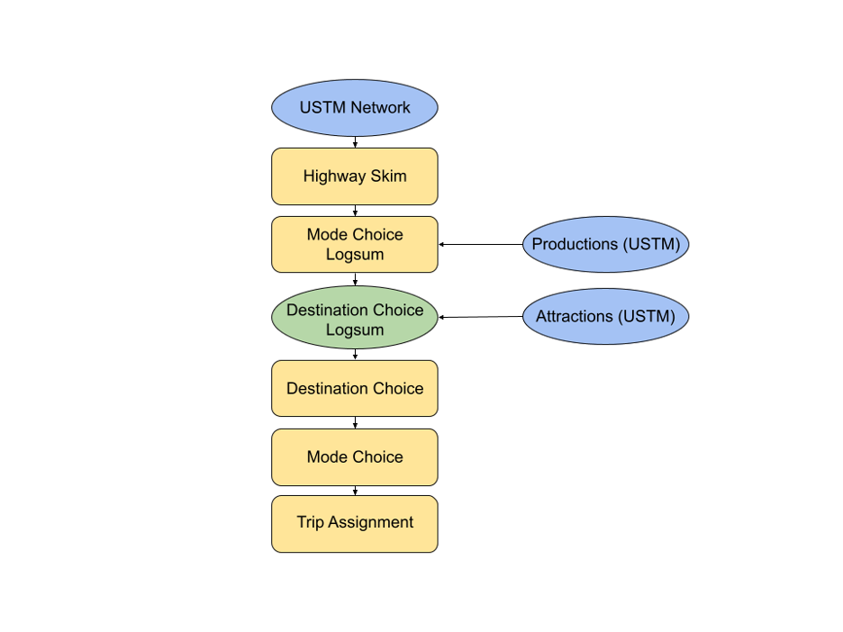

3 Methods
3.1 Overview
This chapter presents the design and implementation of a model system designed to measure accessibility changes on a transportation network after the elimination or loss of highway links. The chapter begins with a discussion of the Utah Statewide Travel Model (USTM) and why it is not entirely suitable for this study. We then present a proposed model design and implementation within the CUBE travel demand modeling software. The chapter ends with a discussion of model calibration and validation.
3.2 Utah Statewide Travel Model
The Utah Statewide Travel Demand Model (USTM) is developed and maintained by the Travel Demand Modeling group at UDOT. Within Utah, there are five travel demand models developed for urban centers under the purview of a Metropolitan Planning Organization (MPO). USTM covers the rural and other areas lying outside of the MPO model regions, where UDOT is responsible for transportation planning. Consequently, USTM covers the entire state, and incorporates MPO models developed by the Wasatch Front Regional Council (WFRC), Mountainland Association of Governments (MAG), Cache Metropolitan Planning Organization (CMPO), and the Dixie Metropolitan Planning Organization (DMPO). Additionally, the Summit/Wasatch Travel Demand Model is incorporated into USTM (Utah Department of Transportation 2021)
The local travel demand models and USTM use a gravity-based trip distribution model. The gravity model assumes that trips between origin-destination (OD) pairs are proportional to total productions \(P\) and attractions \(A\). That is, all productions will be attracted to a location based on the size of a location (a locations attractiveness) and the friction factor between the OD pair. A mathematical representation of the gravity model is given by:
\[T_ij= P_i*(A_j F_{ij}/\sum A_j F_{ij})\] Where: \(T_{ij}\) represents that trips made between an origin i and a destination \(j\) \(P_i\) represents the productions at origin \(i\) \(A_j\) represents the attractions ad destination \(j\) And \(F_{ij}\) is the friction factor between and OD pair The friction factor (also known as the impedance, or resistance) between two zones can be represented in a number of ways, such as with a negative exponential function:
\[F_{ij}= αexp(-β d_{ij})\] Where \(d_{ij}\) is the distance or cost between zones \(i\) and \(j\) and \(α,β\) are calibrated parameters. In the gravity model, as the distance between an OD pair increases, users become less likely to make trips between that OD pair. Destinations are fixed, and trips calculated using the gravity model must have a proportional number of users assigned to each destination based on its size or level of attraction.
A primary weakness of gravity-based distribution models is their inability to consider multi-modal impedances or other attributes of a destination rather than their size (as represented by \(A_j\) in Equation 1). The friction factor in Equation 2 asks an implicit question with its distance or cost variable d: which mode is used for the trip? In almost all cases, automobile distances are asserted as the only option, but if a destination happens to be close by rail and far by highway, the destination choice model will not incorporate this.
Alternatively to four-step models, logit-based destination choice models improve model accuracy when compared with gravity and four-step models, and are advantageous because of an increased ability to introduce additional variables and reflect other statistical assumptions (Travel Forecasting Resource 2021). The ability to incorporate improved methods for determining trip distribution, mode choice, and destination choice all allow logit-based models to more accurately estimate trips between OD pairs on a road network. Consequently, logit-based travel demand model can estimate the choice-based effects of major changes to a road network given adverse natural or man-made events. More accuracy in a model’s estimation process provides a more precise estimate than could otherwise be made using another type of model.
Destination choice models, on the other hand, explicitly consider multimodal accessibility. The ability to consider multimodal accessibility allows a user able to choose the location of their destination based on a variety of factors including mode accessibility and other socioeconomic data, which are made available through the Utah Household Travel Survey (UHTS) conducted in 2017. The socioeconomic data primarily comprises the size term of the destination choice. The DC size term is a measure of the appeal or attractiveness of a destination when compared to another destination. The DC size term is discussed in further detail later on in this paper.
A critical feature of logit-based choice models – described previously – is that they are more versatile than traditional modeling methods, with the ability to allow different types of data to be used for analysis which is highly important for a model that is constrained in some way. Additionally, logit-based choice models are better able to measure the changes in accessibility of a destination due to network changes than other models. As such, logit-based models are typically used in new or more advanced travel models.
Such logit-based destination choice models are becoming common in four-step and more advanced travel models. However, logit-based destination choice models have not been implemented within MPO models in Utah or within USTM except for some home-based work trips in the WFRC/MAG model. As a result, USTM or other travel models within Utah are not sufficient to use for the accessibility analysis proposed for this research, and a new model must be developed.
3.3 Model Design
This section outlines the design and implementation of a model to evaluate critical link resiliency in Utah.
3.3.1 Model Framework
An initial model framework developed in ?? was created to show how a resiliency model would appear in order to create a logit-based model. The main inputs of the model are all extracted from USTM. The three main inputs to the framework are:
- Highway Network: The USTM model network, which was obtained from UDOT and forms the basis of the model.
- Productions: Zonal trip productions from the USTM model, classified as household productions.
- Attractions: Zonal trip attractions from the USTM model, classified as socioeconomic data.
The model framework consists of the following steps (also visually represented in ??):
- Skim Network
- In this step, the model determines the shortest path by travel time on the USTM network between each origin and destination. The model also determines the corresponding distance.
- Mode Choice Logsum
- The mode choice logsum is a function of the travel impedances estimated in the highway and peak transit skims and serves as an accessibility term in the destination choice model.
- The mode choice logsum uses utility functions to determine the probability and logsum associated with travel between each original and destination.
- The mode choice model uses constants and coefficients to calibrate and adjust the utility equations and determine the mode choice probabilities.
- Destination Choice (DC) Logsum
- The destination choice logsum is a function of the travel impedances (represented by the mode choice logsum) and the attraction size term of each destination zone. This is the key evaluation metric of the model.
- The attraction size term is determined using socioeconomic data for each destination zone.
- Destination Choice
- Allocates trip productions to destination zones based on information from the destination choice logsum.
- Mode Choice
- Allocates trip productions attracted to each zone to specific modes based on the mode choice logsum.
- Trip Assignment
- A static user equilibrium assignment loads all estimated trips onto the network based on origin, destination, and mode choice. Congestion, if present, will be shown on the network using this step. Highway volume-capacity functions from the USTM model will be applied.

In this chapter, you describe the approach you have taken on the problem. This usually involves a discussion about both the data you used and the models you applied.
3.4 Data
Discuss where you got your data, how you cleaned it, any assumptions you made.
Often there will be a table describing summary statistics of your dataset.
Table ?? shows a nice table using the datasummary
functions in the modelsummary package.
3.5 Models
If your work is mostly a new model, you probably will have introduced some details in the literature review. But this is where you describe the mathematical construction of your model, the variables it uses, and other things. Some methods are so common (linear regression) that it is unnecessary to explore them in detail. But others will need to be described, often with mathematics. For example, the probability of a multinomial logit model is
\[\begin{equation} P_i(X_{in}) = \frac{e^{X_{in}\beta_i}}{\sum_{j \in J}e^{X_{jn}\beta_j}} \tag{3.1} \end{equation}\]
Use LaTeX mathematics. You’ll want to number display equations so that you can refer to them later in the manuscript. Other simpler math can be described inline, like saying that \(i, j \in J\). Details on using equations in bookdown are available here.